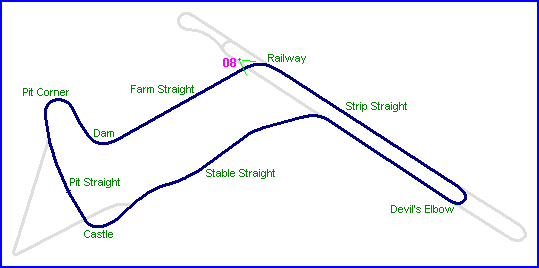
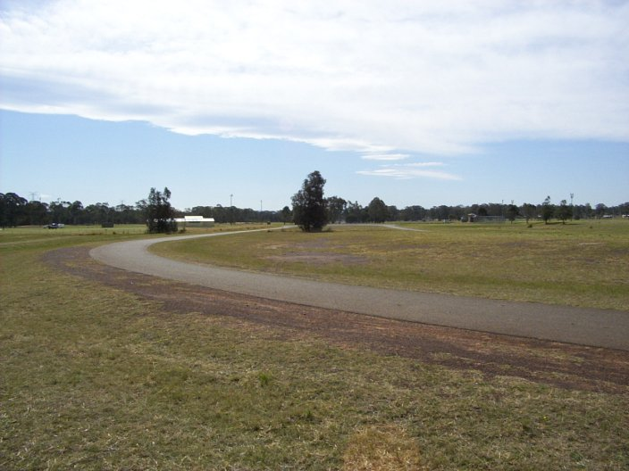
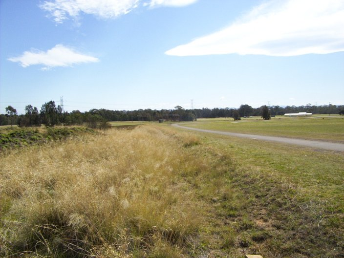
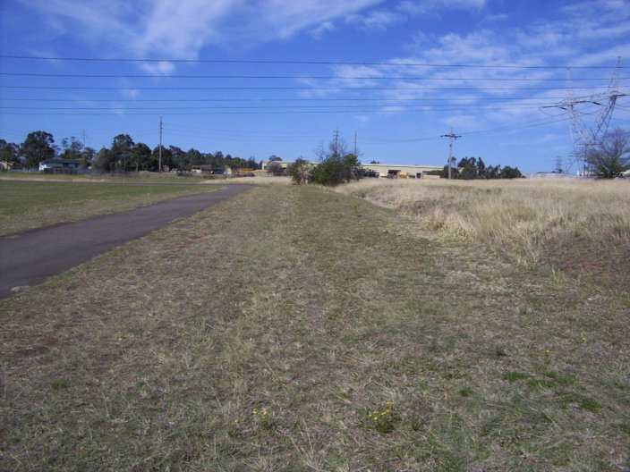

|| Contents | Strip Straight | Farm Straight & Railway Corner | Stable Straight | Strip Return Curve || Home ||

Numbers indicate the region where the photographs were taken. Click on direct links
below:
| 08 | 06 | 07 |

#08 - Railway corner, looking back up the airstrip

#06 - Looking back down Farm Straight towards Railway corner

#07 - Looking up Farm Straight towards the Dam corner and the pits. Note the trench to the
right of this picture
Photographs ©Conrad Zalewski. Reproduced here with kind permission.